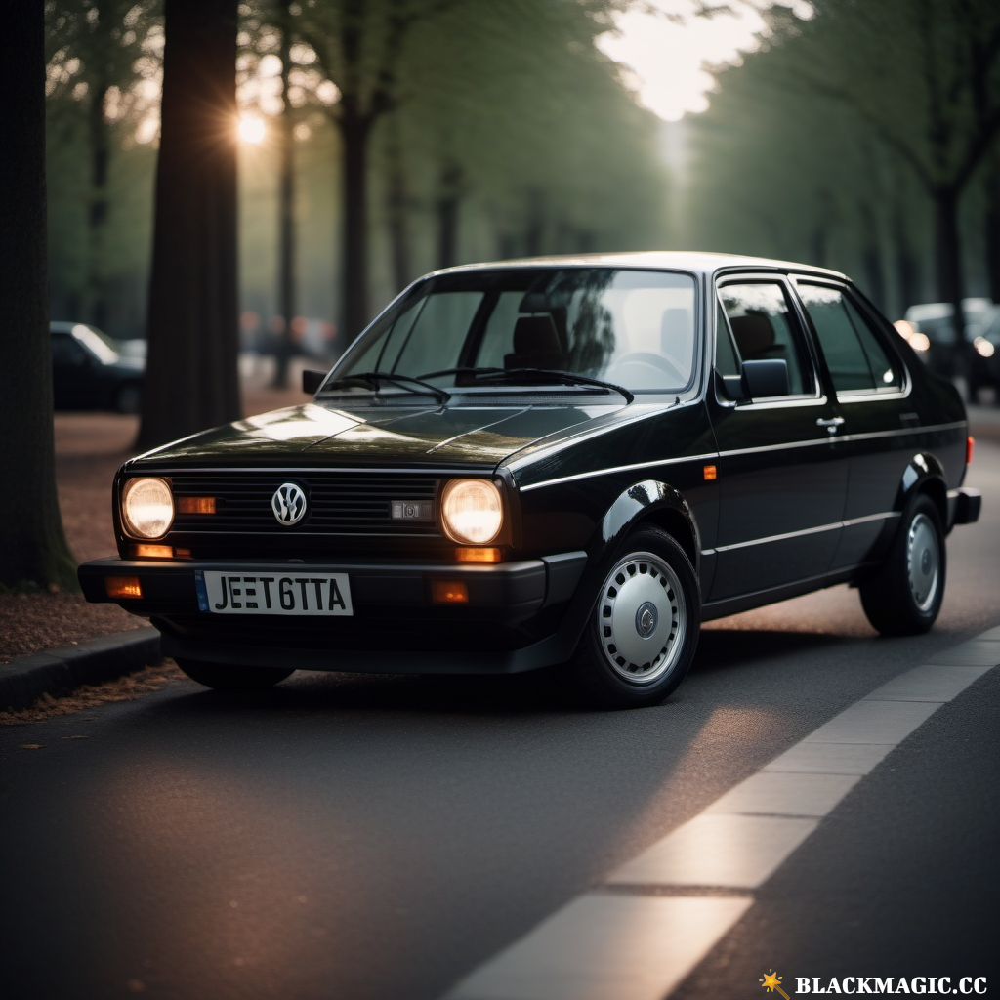
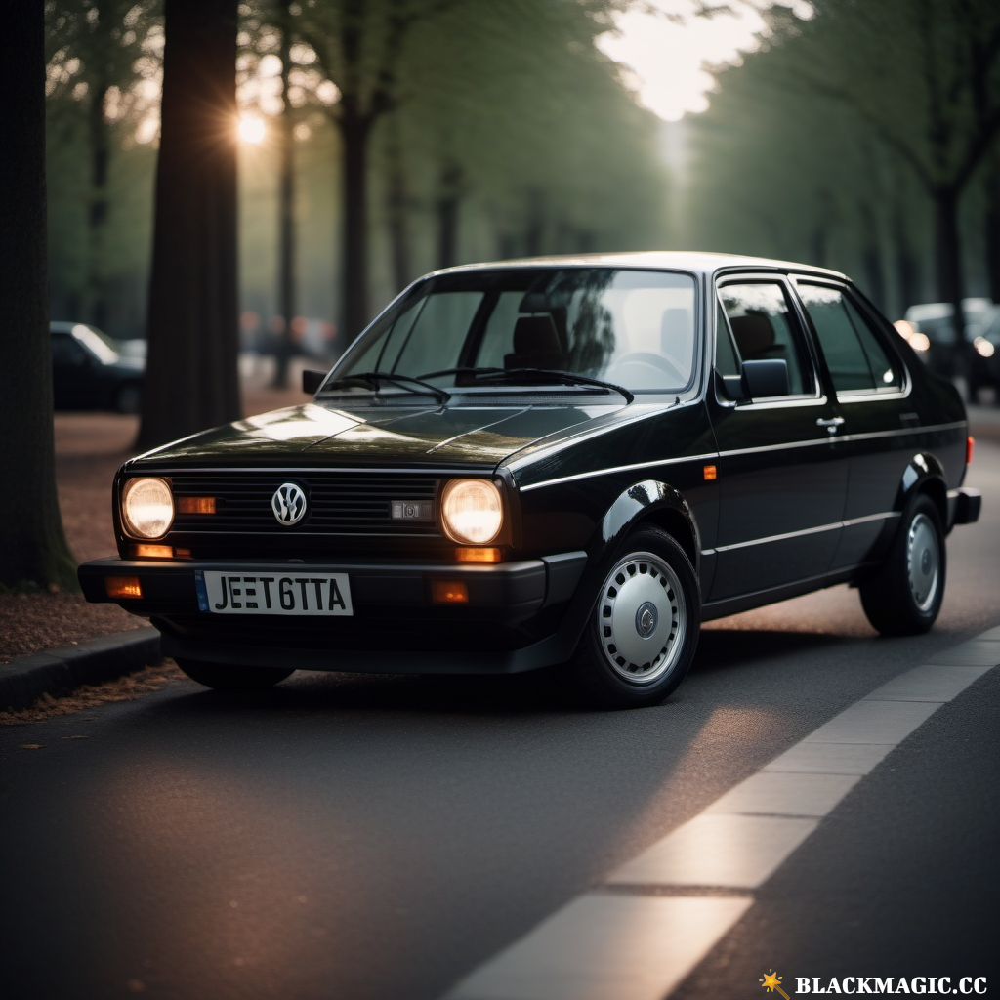

wszystko co potrzeba dla każdego gracza fs22
 Wszystkie mody foty z gierki znajdziesz na tej stronie :P
możesz też tu coś sam zamieścić
Jeśli masz jakieś propozycje pisz w zakładce kontakt

 Wszystkie mody foty z gierki znajdziesz na tej stronie :P
możesz też tu coś sam zamieścić
Jeśli masz jakieś propozycje pisz w zakładce kontakt